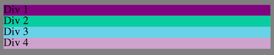
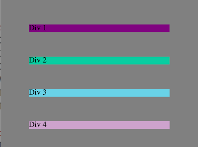
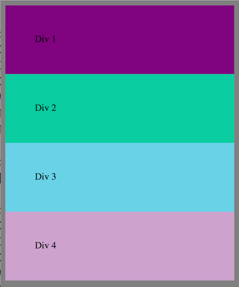
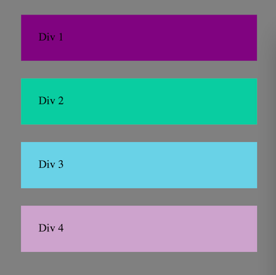

Thinking inside the box model
A step by step look at margin, padding and border
3/27/2015
The CSS box model is an essential concept to wrap your head around when styling an HTML page.
margin, padding and border all work together to push your elements around and frustrate you to no end.

Above we see four div tags in their natural state. There is a background-color applied to make them stand out from each other. But there is no margin, no padding and no border. They naturally fill up the full width of their container.

Here I have added 50 pixels of margin to each div. Take note that the elements are moving away from the left and ride sides as well as the top and bottom.

Now I have set the margin back to 0 and added 50 pixels of padding.
Padding is like blowing up a balloon and margin is like moving the balloons further apart.

Here's what adding 25 pixels of margin and padding looks like. Quite attractive if I say so myself. There's a certain balance there.